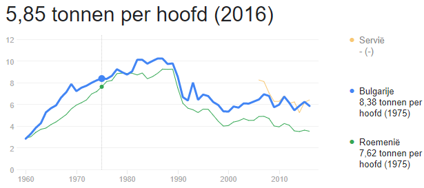

Bulgarije ligt in Zuidoost-Europa met 7 miljoen inwoners. En Sofia als hoofdstad.

Hieronder hebben we een schema van het aantal CO2 uitstoot in de loop der jaren.

Zoals je kunt zien, is de aantal CO2 uitstoot per persoon 5,85 ton. Maar we kunnen wel zien hoe het gedaald is. Maar toch is de aantal uitstoot heel erg groot. En er begint ook droogte op te komen. Waardoor er bijvoorbeeld minder graan kan worden verbouwd.

Zie hieronder een kaart met de reliëf van Bulgarije:

Zoals je kunt zien, zijn er meer hooggebergtes in de zuid-westen van Bulgarije dan de rest van het land. Jammer genoeg is dat de beste foto die ik kon vinden, maar ik kan je wel vertellen dat er beroemde rivieren door Bulgarije stromen zoals de Iskar. Het bijzondere daaraan is, dat het rivier bijna door heel het noordgrens van Bulgarije stroomt.
Samenleving in Bulgarije

In Bulgarije is het makkelijk om een rustige dag te vinden. De straten zijn niet te druk, dus je kan gerelaxed door de straat heen lopen. Het is daar alleen druk op een culturele dag, zoals in Nestinarstvo. Daar vieren ze de dag van Sint Constantijn en Helena.